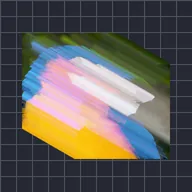

লিনিয়ার স্ট্রিক

লেয়ারের কপিগুলো একটি কোণ বরাবর সরিয়ে এবং যেখানে ওভারল্যাপ হয় সেখানে ব্লেন্ড করে সোজা স্ট্রিক তৈরি করে।
সেটিংস
| সেটিং | ধরন | রেঞ্জ | ডিফল্ট |
|---|---|---|---|
| অ্যাঙ্গেল | কোণ | -3600° থেকে 3600° | 0° |
| দৈর্ঘ্য | সংখ্যা | 0 থেকে 4000 | 100 |
| আলফা | সংখ্যা | 0% থেকে 100% | 100% |
| বায়াস | সংখ্যা | -100% থেকে 100% | 0% |
| ব্লেন্ডিং | পছন্দ | লাইটেন, এভারেজ, ডার্কেন | লাইটেন |